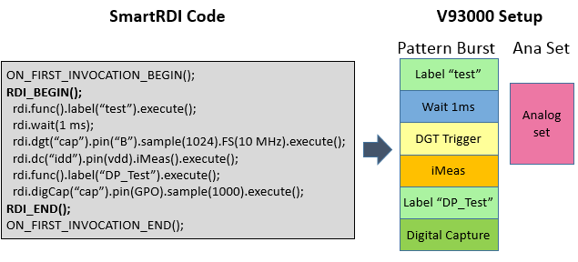
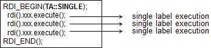
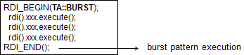

SmartRDI
SmartRDI (Rapid Development Interface) provides a high level of programming interface to create your test method program. Use the classes listed below to setup your tests.
It is a new V93000 API set to provide:
- simple and common programming interface
- automated sequencer based pattern burst generation for DC test, Analog/RF trigger, digital capture, error map, protocol, utility line control.
- automated burst Analog/RF set generation
- result retrieving with transparent hidden upload
- simple way to debug
SmartRDI classes
SmartRDI provides classes to set up different types of tests, including dc, digital capture, functional test, protocol, mixed signal, RF, utility control, timing and level. For each class, functions are provided to set up the test and retrieve the test result. You can refer to the Code structure with SmartRDI for the general programming with SmartRDI. The following classes are supported:
cogo()class: SmartRDI: Pattern-based conditional jump - cogodc()class: SmartRDI: DC test setup and Using a DC resources as an AWG/DGT with SmartRDIdigCap()class: SmartRDI: Digital capture test setupemap()class: Getting error map information from user patternfunc()class: Functional test setuphwRelay()class: SmartRDI: Digital channel relay controllevel()/timing()class: SmartRDI: Level and timing set changesprotocol()class: Setting up protocol tests with SmartRDIroute()class: rdi.route()smartVec()class: Generating vector with SmartRDItmu()class: SmartRDI: TMU test setuputil()class: Controlling the utility lines with SmartRDIalarm()class: SmartRDI: Alarm handling for DCVI.
Execution mode
SmartRDI enables the API‑based sequencer‑controlled test with user‑friendly interface. Its target is to speed up the time to market with competitive throughput. SmartRDI provides two execution modes, the pattern‑based mode and the code‑based mode. For more information, see also Code-based and pattern-based programming.
- Code-based mode
In the code‑based mode of SmartRDI programmed setups are executed one after the other. The setups are based on normal test method APIs. The execution is controlled by the workstation. There is no generation of burst patterns and analog sets. Put the code to be executed in the code‑based mode outside of the
RDI_BEGIN()/RDI_END()block.The pattern‑based mode described below cannot cover all features of the hardware. Some functions are therefore available only in code‑based mode.
- Pattern-based mode
This is the target mode for the program with SmartRDI.
In this mode, SmartRDI will generate a burst pattern with the DC events and analog hardware trigger and generate an analog set for all the specified analog tests in a
RDI_BEGIN()/RDI_END()block (a block starting withRDI_BEGIN()and ending withRDI_END()).
The generated burst pattern is named as "_rdi_burst_" + test_suite_name + RDI_block_number_in_testsuite. The burst pattern will be executed when
RDI_END()is executed.Note that the default sequencer timeout is 900 s. For long sequences use SQTO, SQTO? - (SeQuencer TimeOut) to increase the SmarTest Work Center.
For multiport tests, a multiport burst pattern will be generated. Tests on the same port will be executed serially and tests on different ports will be executed in parallel. The function portSync() can be used to synchronize the time among all the ports.
You can have multiple
RDI_BEGIN()/RDI_END()blocks in one test method. The burst pattern and the analog set will only be generated for the first run of the test method after it is built. Build the test method again when the device setups are reloaded or modified.To make the debug easier, the single mode is provided for the pattern‑based execution. In this mode, the pattern will be executed when the corresponding code is executed. The following figures show the execution of single mode for debug and the execution of the burst mode for normal pattern‑based execution. The burst mode is used by default.


To avoid the generation of setups in the production site, the production mode is provided. In this mode, no new setup files will be generated. SmartRDI will use the setups generated from the burst mode in the execution. Keep the test method code and the device setup aligned before executing in the production mode.
RDI_INFO_LEVEL
See RDI_INFO_LEVEL for more information about information levels.
Supported hardware
SmartRDI supports the following hardware cards:
- Digital cards: PS1600, PS5000
- DC Scale and VI cards: DPS128, UHC4T, XPS256
Supported SmarTest versions
Functional changes
- Introduced in SmartRDI 2.1.0
- SmartRDI 2.4.2: DC Scale AVI64 card added.
- SmartRDI 7.5.0: DC Scale FVI16 card added.
- SmarTest 7.10.2: Pin Scale 5000 card added.